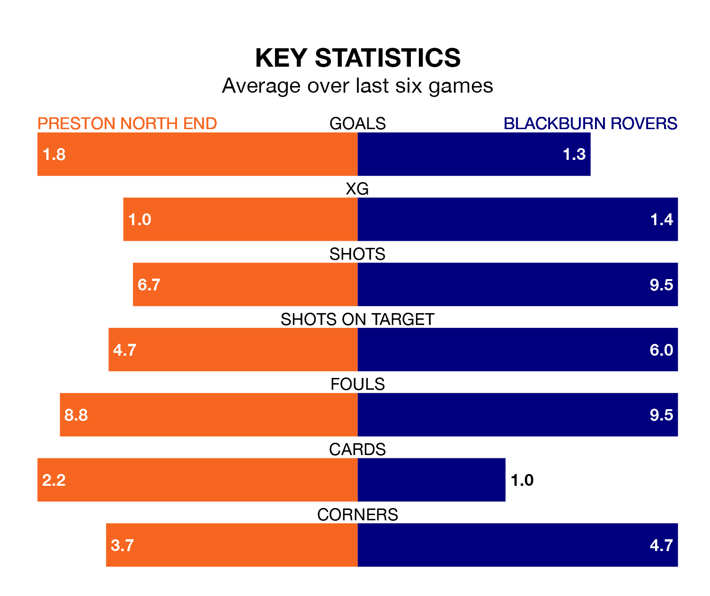

Preston North End host Blackburn Rovers at Deepdale on Saturday on the back of three consecutive wins in EFL Championship.
Preston have picked up 13 points from their last six games, and they face a Blackburn side who lost their last match, and have collected five points from the last possible 18.
In Samuel Szmodics, Blackburn have the league's sharpest shooter so far this season. He has notched 17 goals in 29 appearances.
His goal rate of one every 151 minutes is slightly quicker than that of Will Keane, Preston's top scorer with a goal every 140 minutes, and a total of 11 goals in 24 games.
In the last 10 years, Preston and Blackburn have played each other on 15 occasions. Preston won eight of them, Blackburn four, and they drew three times.
On average, the Lilywhites scored 1.8 goals and Blackburn 1.5 in those matches.
Their last meeting was on November 10, when Preston won 2-1 away.
With 45 goals in 31 games so far this season, Rovers are scoring more than average in the league with 1.5 goals per game. But they are conceding more than average too, letting in 57 goals at a rate of 1.8 per game.
North End, meanwhile, are below average scorers, with 1.3 goals per game, compared to a league average of 1.4. They have conceded 1.6 goals per game.
The away side are 17th in the table after 31 games, of which they have won 11 and drawn three, earning 36 points.
The Lilywhites are eight places ahead of Blackburn in ninth, with 14 wins and six draws putting them on 48 points.
Preston's last match was on Wednesday, a 2-1 win against Middlesbrough, with Emil Ris Jakobsen and Liam Millar getting the goals for the Lilywhites.
Blackburn lost 1-0 against Birmingham City last time out, on Tuesday.
Saturday's match will be refereed by David Webb, who has taken charge of 21 EFL Championship games so far this season, issuing one red card and booking 92 players. He has awarded three penalties.
The last Preston game Webb refereed was a 2-1 away loss to Leeds United on January 21. His last Blackburn match was their 3-1 loss away at Sheffield Wednesday on December 2.
Updated: 13:04 (UTC), 16/02/24